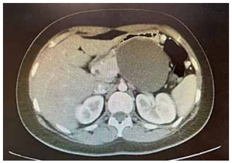
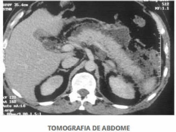
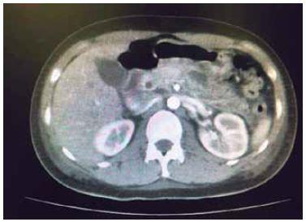
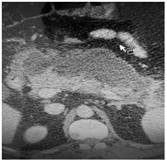
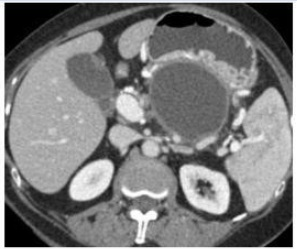
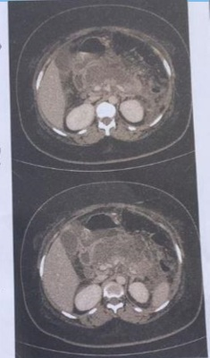
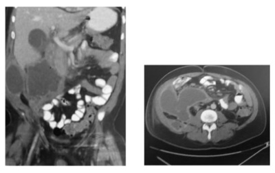
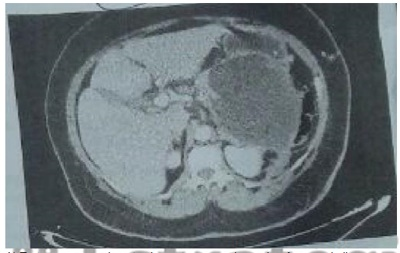
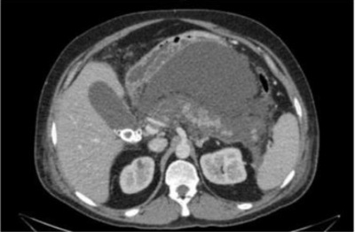

Questão 1 · Lipase · Outros · Manif estações Clínicas · 4000184788Menina, 13 anos, é admitida no Setor de Emergência com queixa de vômitos e dor abdominal forte que levam à posição com quadris e joelhos exionados. Relata que seu início foi súbito, há cinco horas, e que a dor não cessa. Exame físico: posição antálgica; anictérica; discreta distensão abdominal; dor à palpação de todo o andar superior do abdome. US abdominal: colédoco com calibre nos limites superiores da normalidade. Pode-se a rmar que, para confirmar a hipótese diagnóstica mais provável, o exame laboratorial melhor indicado é:
A LDH
B amilase
C lipase
D fosfatase alcalina
Questão 2 · Cirurgia · Critérios Diagnósticos · 4000184701Mulher de 42 anos é encaminhada para o hospital com quadro de dor em andar superior do abdome, irradiada para o dorso associada a um episódio de vômito bilioso há 24 horas. Ela refere que está na la para realização de colecistectomia devido a colelitíase sintomática. Ao exame físico ela se encontra consciente e orientada, desidratada, e com mucosas ictéricas. Os sinais vitais são: pulso de 110 bpm, frequência respiratória de 22 ipm, pressão arterial de 90 por 40 mmHg, temperatura de 36,2° C e saturação de O₂ de 88. O exame cardiorrespiratório mostra taquicardia e murmúrio vesicular abolido em base pulmonar esquerda. Seu abdome está distendido, com ruídos abdominais diminuídos, timpânico, com dor a palpação, mas sem dor a descompressão brusca e o toque retal não apresenta alterações. O médico plantonista suspeita de pancreatite aguda. Para confirmação diagnóstica o próximo passo é:
A Solicitar colangiorressonância
B Solicitar radiografia do abdome
C Solicitar tomografia de abdome
D Dosagem das enzimas pancreáticas
Questão 3 · Dieta · Ressuscitação Volêmica · Controle Álgico · 4000184700Mulher de 37 anos é encaminhada ao setor de pronto atendimento do hospital com queixa de dor em abdome superior em faixa irradiada para o dorso e associada a distensão abdominal e náuseas há 2 dias. No exame físico, ela apresenta-se desidratada, levemente dispneica e ansiosa. O exame cardiopulmonar não apresenta anormalidades e no exame abdominal ela apresenta distensão abdominal, ruídos hidroaéreos presentes e dor a palpação do andar superior, mas sem dor a descompressão brusca. São solicitados exames laboratoriais que mostram hematócrito de 36%; hemoglobina de 11,6 mg/dL; leucócitos de 12.000 mm3; amilase de 1280 U/L; lipase de 530 U/L. Uma ultrassonogra a de abdome é solicitada e revela cálculos no interior da vesícula biliar, mas sem sinais de colicistite aguda. Assinale a alternativa que contém as prioridades na condução deste caso.
A Reposição hídrica, controle da dor e alimentação oral precoce
B Bloqueio da acidez gástrica, antibioticoterapia e nutrição parenteral
C Anticoagulação, antibioticoterapia e descompressão gástrica por sonda
D Drogas pró cinéticas, transfusão de hemoderivados e nutrição parenteral
Questão 4 · Amilase · Lipase · Gastroenterologia · 4000183427O cirurgião é comumente chamado para avaliar pacientes com pancreatite aguda. As dosagens séricas de amilase e lipase fazem parte dos critérios diagnósticos de doença. Em relação a essas enzimas, é CORRETO afirmar que
A qualquer valor de lipase é suficiente para o diagnóstico, já que só o pâncreas produz essa enzima.
B a amilase é menos sensível, porém é a mais específica.
C após 48h do quadro clínico, a lipase é a mais sensível.
D a insuficiência renal não afeta as dosagens dessas enzimas .
E as amilases pancreática e salivar são moléculas idênticas.
Questão 5 · Outros Exames Laboratoriais · Etiologia · Critérios Diagnósticos · 4000183305Paciente de 58 anos vem à emergência por quadro de dor e distensão abdominal, náuseas e vômitos há 3 dias. Associado, relata icterícia de escleras, colúria e acolia. Os exames evidenciaram amilase 850 U/L (Valor de Referência – VR até 100 U/L) e hiperbilirrubinemia às custas de bilirrubina direta. Além disso, ALT 126 U/L (alanina aminotransferase – VR 40 U/L) e AST 82 U/L (aspartato aminotransferase – VR 40 U/L). Sobre o caso, analise as assertivas abaixo: I. Nova dosagem de amilase sérica em 2400 U/L dois dias após é indicativo de mau prognóstico. II. Lesão na cabeça do pâncreas pode ser diagnosticada neste caso com a tomogra a computadorizada do abdome, e, dentre os diagnósticos diferenciais, devemos considerar pancreatite autoimune por IgG4. III. Elevações dos níveis de ALT (alanina aminotransferase) superior a 3 vezes o valor de referência sugere cálculo biliar como causa da pancreatite. Quais estão corretas?
A Apenas I e II.
B Apenas I e III.
C Apenas II e III.
D I, II e III.
Questão 6 · Etiologia · Cirurgia · Coledocolitíase · 4000182176Mulher de 32 anos, admitida com dor no andar superior do abdome há 12 horas. Achados físicos: icterícia +/4+, temperatura de 37 °C, frequências respiratória e cardíaca de 20 incursões e 100 batimentos por minuto, respectivamente, distensão e dor abdominal no andar superior à palpação super cial e profunda. Achados laboratoriais: Glóbulos brancos: 16.000/ml (valor de referência de 4.000 a 10.000/ml), amilasemia de 1.200 U/dl (valor de referência até 125 U/L), bilirrubinas totais e direta de 4,6 e 3,2 mg/dl (valor de referência de até 1,10 e 0,30 mg/dL, respectivamente). As imagens foram obtidas durante o tratamento cirúrgico realizado após uma semana da admissão. Dentre os cálculos observados, as manifestações clínicas e laboratoriais e os achados radiológicos estão associadas, provavelmente, ao:

A 3
B 4
C 1
D 2
Questão 7 · Fisiopatologia · Fisiopatologia · Trombose Venosa · 4000173545Homem, 41 anos encontra-se em avaliação clínica para um quadro de hipercalcemia secundária a hiperparatiroidismo. Quais dos quadros de abdome agudo abaixo estão relacionados a essa condição?
A Diverticulite e colecistite
B Apendicite e úlcera péptica perfurada
C Diverticulite e pancreatite
D Úlcera péptica perfurada e pancreatite
E Trombose mesentérica e pancreatite
Questão 8 · Dieta · 4000170584No que se refere à pancreatite aguda, assinale a alternativa correta.
A Só é possível liberar dieta via oral para o paciente quando houver melhora da dor e normalização dos níveis séricos de amilase.
B Só é possível liberar dieta via oral para o paciente quando houver melhora da dor e a tomografia de abdome não mostrar nenhuma complicação local.
C Só é possível liberar dieta via oral para o paciente quando houver melhora do quadro doloroso, sendo que, se esse se mantiver após 48 horas de jejum, dever-se-á iniciar nutrição parenteral exclusiva.
D Só é possível liberar dieta via oral para o paciente quando houver melhora do quadro doloroso, sendo que, se esse se mantiver após 48 horas de jejum, dever-se-á solicitar passagem endoscópica de sonda até após a papila duodenal e iniciar dieta enteral (mesmo que em baixo volume).
E A dieta enteral por sonda é contraindicada nos pacientes com pancreatite grave, sob ventilação mecânica, em uso de droga vasoativa.
Questão 9 · Complicações · Cirurgia · 4000170075Homem de 55 anos apresenta desconforto epigástrico e plenitude gástrica. AP: etilista e internação prévia por pancreatite aguda há 2 semanas. TC de abdome: conforme imagem. A conduta correta é:

A observação clínica e seguimento com exame de imagem.
B laparotomia exploradora de urgência.
C drenagem percutânea.
D EDA para possível conduta terapêutica.
Questão 10 · Tomograf ia Computadorizada de Abdome · Cirurgia · 4000169404No que se refere à pancreatite aguda, assinale alternativa correta.
A A pancreatite necrosante precisa de intervenção cirúrgica o mais brevemente possível do seu diagnóstico.
B A pancreatite necrosante apresenta coleção peripancreática diferente da pancreatite aguda edematosa intersticial ao exame tomográfico.
C As complicações tardias na pancreatite necrosante (acima de quatro semanas) são representadas pelas coleções fluidas e pelos pseudocistos.
D O pseudocisto é a complicação tardia mais comum após a pancreatite necrosante.
E A intervenção diante de complicações da pancreatite necrosante deve ser realizada por cirurgia, pois o acesso percutâneo ou endoscópico não é eficaz para a remoção da necrose.
Questão 11 · Tomograf ia Computadorizada de Abdome · Gastroenterologia · 4000169320Masculino, com quadro clínico sugestivo de pancreatite aguda é admitido na emergência do hospital. Na admissão, ele apresenta um hematócrito de 36%; hemoglobina de 12 mg/dl; leucócitos de 12.000; glicemia de 145 mg/dl; AST sérica de 140 U/L; amilase de 1200 U/L; ureia de 20 mg/dl e DHL de 250 UI/L. Submetido aos procedimentos de rotina, como hidratação vigorosa, analgesia e transferido para a Unidade Terapia Intensiva. Com relação a utilização da tomografia computadorizada abdominal, podemos afirmar que:
A Deve ser utilizada em todos os pacientes com pancreatite aguda, após 72 horas do início dos sintomas.
B Não deve ser empregada antes de três dias após o início dos sintomas, exceto quando houver dúvida diagnóstica.
C Deve ser empregada na fase inicial dos sintomas, pois define a gravidade com o índice de Balthazar-Ranson.
D Pode ser realizada, em pacientes graves, sem o uso de contraste endovenoso para definição da presença de necrose.
Questão 12 · Gastroenterologia · Inf ecções e Toxinas · 4000166435manifestação clínica e parasitose intestinal estão relacionadas em:
A pancreatite aguda = ascaridíase.
B prolapso retal = enterobíase.
C síndrome de Loeffler (migração errática para a via respiratória) = tricuríase.
D diarreia sanguinolenta = ancilostomíase.
Questão 13 · Exames Complementares · Cirurgia · 4000165607Mulher, 31 anos de idade, com obesidade grau 1 está internada devido a pancreatite aguda leve. Evoluiu com melhora da dor, 2 dias após o início dos sintomas. Tem diabete melito tipo 2 e hipotireoidismo. Foi submetida a ultrassonogra a de abdome que evidenciou vesícula biliar de paredes nas, sem cálculos e com via biliar de 0,4 cm. Nega uso abusivo de álcool. Qual é o próximo passo?
A Realizar ecoendoscopia.
B Colecistectomia com colangiografia.
C Tratamento com ácido ursodesoxicólico.
D Realizar tomografia de abdome.
Questão 14 · Complicações · 4000164668Assinale a alternativa que indica corretamente a complicação mais comumente encontrada a longo prazo, após a pancreatite aguda.
A icterícia obstrutiva
B pancreatite crônica
C abscesso pancreático
D pseudocisto pancreático
E trombose da veia esplênica
Questão 15 · Complicações · 4000163672Mulher de 42 anos teve alta hospitalar há 5 semanas, após internamento por pancreatite aguda grave. Estava bem, clinicamente, quando voltou a apresentar dor abdominal, náuseas e vômitos, além de elevação das enzimas pancreáticas. Qual a complicação mais provável, nesse momento?
A Pseudocisto pancreático.
B Coleções necróticas agudas.
C Trombose de veia esplênica.
D Abcessos peripancreáticos agudos.
Questão 16 · Tratamento Clínico · Tratamento Cirúrgico · 4000163549Na pancreatite aguda, necessitamos estrati car a gravidade para que possamos definir a melhor conduta para cada caso. Assim, assinale a alternativa correta:
A Na pancreatite aguda grave, a cirurgia está indicada em todos os casos de necrose pancreática.
B A única conduta nutricional preconizada na pancreatite aguda grave é a nutrição parenteral em virtude da promoção de repouso intestinal.
C Pacientes com pancreatite aguda leve de causa biliar, após melhora, não necessitarão remover a vesícula.
D A nutrição enteral por sonda nasoentérica, mesmo com posicionamento distal após o ângulo de Treitz, estimula a secreção exógena do pâncreas, agravando o quadro na pancreatite aguda.
E Pacientes com pancreatite aguda grave, apresentando necrose infectada, após 2-3 semanas de evolução e falha nos antibióticos, deverão submeter-se a uma drenagem da coleção ou necrose infectada, inicialmente, se possível, por métodos percutâneos ou endoscópicos.
Questão 17 · Gastroenterologia · Etiologia e Fatores de Risco · 4000163433No que diz respeito a pancreatite crônica, a causa mais comum entre os adultos e a causa mais comum entre as crianças são, respectivamente:
A alcoólica e fibrose cística.
B hereditária e idiopática.
C idiopática e fibrose cística.
D alcoólica e hereditária.
E alcoólica e congênita (
Questão 18 · Avaliação da Gravidade · 4000144226Homem, 49 anos, com dor no andar superior do abdome, amilasemia de admissão de 2.460 U/dl (valor de referência até 160 U/dl), há 72 horas em tratamento com jejum, hidratação e analgesia em hospital de média complexidade, sem Unidade de Terapia 1 ntensiva. As frequências cardíacas e respiratória estão em 106 batimentos e 26 incursões respiratórias por minuto, a amilasemia elevou-se para 4.280 U/dl, o hematócrito está em 55% (valor de referência de 36 a 46%), os glóbulos brancos de 16.000/ml (valor de referência de 4.000 a 10.000/ml), a ureia e creatinina, respectivamente, de 150 (valor de referência de 16 a 40 mg/dl) e 2,8 (valor de referência de 0,6 a 1,2 mg/dl), as bilirrubinas totais de 6,4 mg/dl (valor de referência de 0,2 a 1,0 mg/dl) e bilirrubina direta de 4,4 mg/dl. Após tomogra a de abdome (que mostrou coleções peripancreáticas), foi solicitada a transferência para hospital terciário. Quais os achados que podem justi car o encaminhamento para o hospital terciário?

A A leucocitose, a hiperbilirrubinemia e a amilasemia.
B As coleções peripancreáticas, a amilasemia e a leucocitose.
C As coleções peripancreáticas e a hiperbilirrubinemia.
D A hemoconcentração e a azotemia.
Questão 19 · Tratamento Clínico · Tratamento Cirúrgico · Manif estações Clínicas · 4000141665Homem de 26 anos refere dor em andar superior do abdome, acompanhada de náuseas e sensação de empachamento. Após três dias, apresenta piora da dor, com necessidade de mor na. Exame físico na admissão: BEG, abdome globoso, doloroso à palpação de epigástrio. Exames laboratoriais na admissão: Hb 14,2 g/dL; HT 40%; GB 19 000/mm3; plaquetas 224 000/ mm³; TGO 88 U/L; TGP 102 U/L; GGT 504 U/L; FA 199 U/L; BT 1,5 mg/dL, glicemia 150 mg/dL, DHL 250 U/L, amilase 2 600 U/L. TC de abdome no terceiro dia apresenta: De acordo com a principal hipótese diagnóstica, é correto afirmar que

A o antibiótico deveria ter sido introduzido na admissão.
B a TC de abdome deve ser realizada o mais precoce possível.
C a hipocalcemia é um critério de gravidade.
D a CPRE está indicada após estabilização clínica.
Questão 21 · Tomograf ia Computadorizada de Abdome · Outros Exames de Imagem · Outros Exames Laboratoriais · 4000140774Mulher de 33 anos de idade é encaminhada a hospital terciário devido a dor abdominal de forte intensidade há 36 horas. Refere início da dor na região superior do abdome, que depois tornou-se difusa. Apresentou vômitos e náuseas, porém sem alteração do hábito intestinal. Nega febre. No exame clínico, está em regular estado geral, Sat.O2 de 89%, FC: 100 bpm, FR: 20 ipm, PA: 100x60mmHg. Ausculta pulmonar diminuída na base esquerda. O abdome está levemente distendido, doloroso difusamente, com sinais de irritação peritoneal no andar superior do abdome. O toque retal não tem alterações. Realizados os seguintes exames laboratoriais: Hb: 11,3 g/dL; Ht: 31%; Leucócitos: 16.320 /mm3; PCR: 170 mg/dL; Creatinina: 1,18 mg/dL; Ureia: 55 mg/dL; TGO: 290 U/L: TGP: 313 U/L; BD: 1,9 mg/dL; FA: 145 U/L; GGT: 123 U/L; Amilase: 1280 U/L; Lipase: 2500 U/L. Realizado ultrassom de abdome superior: vesícula biliar distendida, paredes nas, microcálculos móveis no interior; via biliar de 0,8cm (normal até 0,5cm), porém não visualizado o colédoco distal nem o pâncreas devido a interposição gasosa. Está indicada a realização de exame de imagem adicional neste momento?
A Não está indicada a realização de exame.
B Sim, está indicada tomografia de abdome.
C Sim, está indicada colangioressonância.
D Sim, está indicada ecoendoscopia.
Questão 22 · Tratamento Clínico · Diagnóstico · 4000138648Uma paciente de cinquenta anos de idade, obesa, deu entrada no pronto-socorro com dor abdominal em andar superior há quatro dias e vômitos incoercíveis. Apresentava abdome distendido e doloroso, sem descompressão brusca positiva. Exames laboratoriais mostravam amilase 1.250 U/L, leucócitos 15.000, proteína C-reativa 120 mg/dL, ureia 120 mg/dL e creatinina 1,8 mg/dL. Com base nesse caso hipotético, julgue os itens que se seguem. I. O primeiro exame de imagem que deverá ser realizado é a tomografia computadorizada. II. Jejum oral, hidratação venosa e analgesia são o tripé do tratamento. III. Deve-se introduzir antibioticoterapia para o tratamento da doença. IV. A passagem de sonda nasoenteral para nutrição é mandatória no tratamento. A quantidade de itens certos é igual a
A 0.
B 1.
C 2.
D 3.
E 4.
Questão 23 · Tratamento Clínico · 4000138641Um paciente de 78 anos de idade queixa-se de dor abdominal aguda em epigástrio e anco direito há vinte dias. Já procurou dois serviços anteriormente, sendo que, no primeiro, cou internado por cinco dias e recebeu o diagnóstico de colecistite aguda e, no segundo, foi observado um problema no pâncreas (SIC). Não tem consigo nenhum documento o cial. Chegou ao pronto-socorro com dor em epigástrio (4/10), desidratado, descorado, anictérico e afebril. Apresentava massa palpável em epigástrio, sem sinais de irritação peritoneal. Exames laboratoriais revelaram: hemoglobina de 11 mg/dl; leucócitos de 14.000; glicemia de 108; amilase de 92; e lipase de 72. Realizou, também, a tomogra a abdominal com contraste mostrada no corte abaixo. Com base nesse caso hipotético, assinale a alternativa correta.

A A ecoendoscopia com biópsia é a melhor orientação.
B O tratamento deverá ser cirúrgico.
C O tratamento deverá ser conservador, sem antibiótico e com suporte nutricional.
D O tratamento deverá ser agressivo, com antibiótico e nutrição parenteral.
E A biópsia percutânea deverá ser realizada antes da decisão terapêutica.
Questão 24 · Dieta · Suporte Nutricional Enteral · 4000138633Assinale a alternativa que apresenta a situação em que o início do suporte nutricional precoce está mais bem indicado.
A terceiro pós-operatório de lise de bridas em paciente eutrófico
B paciente em uso de droga vasoativa, em dose elevada
C paciente com pancreatite aguda grave
D paciente em quinto pós-operatório de colectomia direita, com boa evolução
E primeiro pós-operatório de colectomia total, com ileostomia, em paciente de baixo risco nutricional ainda em íleo paralítico
Questão 25 · Dieta · Ressuscitação Volêmica · Controle Álgico · 4000137951Uma mulher de 23 anos, obesa, com 15 semanas de gestação, é internada por dor epigástrica irradiada para o dorso, náuseas e vômitos, há 2 dias. Está em bom estado geral, desidratada, eupneica, anictérica e afebril. Pulso: 90 bpm, PA: 110 × 80 mmHg. O abdome é globoso e doloroso à palpação de epigástrio. Hemoglobina: 11 g/dL, leucócitos: 17.500/mm3, amilase: 860 U/L, gama- glutamiltransferase: 30 U/L, fosfatase alcalina: 30 U/L, AST (aspartato aminotransferase): 25 U/L, ALT (alanina aminotransferase): 24 U/L e bilirrubinas totais: 1,3 mg/dL. O ultrassom mostra microcálculos em vesícula biliar, sem dilatação de vias biliares. É feito o diagnóstico de pancreatite aguda biliar. Classificação da pancreatite quanto à gravidade e conduta inicial para essa paciente:
A Leve. Tratamento clínico e observação, sem antibiótico e sem outros exames de imagem.
B Moderada. CPRE (colangiopancreatografia retrógrada endoscópica).
C Leve. Recomendável antibioticoterapia profilática, por se tratar de gestante.
D Gravidade ainda indeterminada. Antibioticoterapia empírica.
E Grave (leucocitose). Ressonância nuclear magnética, por causa da gestação.
Questão 26 · Critérios de Ranson · 4000132790Na pancreatite aguda, são critérios de Ranson de admissão, exceto:
A Contagem de global de leucócitos.
B Glicemia.
C Idade.
D Dosagem de lipase sérica.
Questão 27 · Amilase · Etiologia · Tratamento Clínico · 4000129910Paciente feminina de 50 anos, inicia com quadro de dor abdominal súbita com 12 horas de evolução. Durante avaliação em pronto atendimento, o médico assistente formula a hipótese diagnóstica de pancreatite aguda. Em relação ao diagnóstico e tratamento desta paciente, analise as assertivas abaixo: I) A base do diagnóstico desta patologia são os achados clínicos associados a uma elevação dos níveis das enzimas pancreáticas no plasma. II) A lipase é um marcador mais específico que a amilase, pois esta pode estar elevada em inúmeras condições, como na úlcera péptica perfurada e na salpingite. III) A base do tratamento desta patologia é a reposição agressiva de líquidos e eletrólitos. IV) Os cálculos biliares e o uso abusivo de álcool representam de 70% a 80% dos casos desta patologia, podendo ser causada também por trauma fechado ou ser induzida por medicamentos. Estão corretas as assertivas
A II apenas.
B I e II apenas.
C III e IV apenas.
D II, III e IV apenas.
E todas assertivas estão corretas.
Questão 28 · Tomograf ia Computadorizada de Abdome · Avaliação da Gravidade · 4000129771Assinale a alternativa que corresponde, na avalia- ção tomográfica da pancreatite aguda, à classificação de BALTHAZAR C.
A Pâncreas normal
B Edema do pâncreas
C Presença de uma coleção
D Presença de duas ou mais coleções
E Inflamação peripancreática com perda dos contornos pancreáticos
Questão 29 · Tratamento Clínico · Diagnóstico · 4000129510Mulher, 39 anos, com dor epigástrica aguda, intensa 9/10, acompanhada de náuseas e vômitos e com irradiação para o dorso é avaliado no pronto-atendimento. Ao exame, PA 90 x 60 mmHg, T: 37ºC, FR 22 irpm, pulso 105 bpm, taquipneica, hipoidratada, ansiosa, ictérica +2/4. IMC 32 kg/m². Ausculta pulmonar: estertores em bases bilaterais. Abdome: rígido e doloroso a palpação, ruídos hidroaéreos reduzidos, presença de equimoses periumbilicais. Pulsos nos e débeis. Tempo de enchimento capilar > 3 segundos. Exames laboratoriais: Hb 15 g/dL Ht 50% 17500 leucocitos/mm³ , Ur 83 mg/dL Cr: 1,5 mg/dL, TGO 55 U/L (VR < 50 U/L), TGP 62 U/L (VR < 68 U/L) Glicemia 350 mg/dL gasometria arterial pH 7,25 pCO2 30 mmHg pO2 90 mmHg HCO3 20 mmHg Anion Gap 18 mEq/L saturação O2 92%. LEGENDA: PA: pressão arterial; T: temperatura; FR: frequência respiratória; irpm: incursões respiratórias por minuto; bpm: batimentos por minuto; IMC: índice de massa corporal; TEC: empo de enchimento capilar; Hb: hemoglobina; Ht: hematócrito; Ur: ureia; Cr: creatinina. Qual o diagnóstico mais provável e manejo inicial mais adequado?
A Apendicite aguda; hidratação, laparotomia e antibioticoterapia.
B Cetoacidose diabética; hidratação intravenosa e insulinoterapia.
C Ruptura de gravidez ectópica; hidratação intravenosa e laparotomia.
D Pancreatite aguda; hidratação intravenosa e suspensão da dieta oral.
Questão 30 · Complicações · 4000120326Homem de 65 anos, dá entrada na UTI com pancreatite aguda biliar. Evoluiu no quinto dia de internação com piora clínica. Exame físico: febril (38ºC), PA 100 x 60 mmHg, FC 125 bpm, abdome globoso, doloroso e tenso à palpação de todo abdome. Exames laboratoriais: GB = 19000/ mm³; DHL = 450 U/L; TGO = 280 U/L; BT = 3,0 mg/dL (BD = 2,1 mg/dL); amilase = 1850 U/L; lipase = 3500 U/L. TC de abdome: imagem a seguir. Em relação ao caso, é correto afirmar que

A a cirurgia, quando indicada, deve ser realizada o mais tardiamente possível, uma vez que a intervenção precoce é associada à elevada morbimortalidade.
B a dieta parenteral é preferível à dieta enteral até que os níveis de amilase e lipase normalizem.
C o uso de antibiótico profilático está associado à redução significativa da morbi-mortalidade.
D a colangiopancreatografia retrógrada endoscópica está indicada nos casos depancreatite associada à icterícia.
Questão 31 · Tratamento Clínico · Avaliação da Gravidade · Complicações · 4000120227Uma paciente de 76 anos de idade foi ao serviço de emergência com história de dor abdominal epigástrica e muitos vômitos há três dias. Nos exames da admissão, apresentava uma amilase de 3.552 e uma proteína C reativa de 20. Estava desidratada com muita dor à palpação em andar superior do abdome. Feito o diagnóstico de pancreatite aguda, optou-se pela realização de tomogra a de abdome com contraste endovenoso, que demonstrou necrose pancreática de aproximadamente 50% do órgão e uma coleção líquida de aproximadamente 5 cm na porção caudal. Com base nesse caso hipotético, assinale a alternativa correta.
A Trata-se de paciente com pancreatite aguda grave, classificada como Baltazar E, e está indicado o tratamento em unidade de terapia intensiva.
B Trata-se de paciente com pancreatite aguda grave, classificada como Baltazar D.
C Trata-se de paciente com pancreatite aguda leve, classificada como Baltazar E, e está indicado o tratamento em unidade de terapia intensiva.
D Trata-se de paciente com pancreatite aguda leve, classificada como Baltazar D, e está indicado o tratamento operatório de gastroduodenopancreatectomia.
E Trata-se de paciente com pancreatite aguda grave, classificada como Baltazar E, e está indicado o tratamento clínico.
Questão 32 · Tratamento Clínico · Manif estações Clínicas · 4000119828Um homem de 32 anos está internado por pancreatite aguda. Está estável hemodinamicamente, afebril, e tem boa perfusão peri- férica, com tempo de enchimento capilar < 2 segundos. Amilase: 750 UI/L, bilirrubina total: 1,5 mg/dL, leucócitos: 17.500/mm3, PCR (proteína C reativa): 250 mg/L, fosfatase alcalina: 150 U/L, gama-GT: 80 U/L. O ultrassom mostra colelitíase, com múltiplos cál- culos de até 0,5 cm de diâmetro e pequena dilatação de vias biliares. Além de jejum, analgesia e hidratação parenteral, o trata- mento inicial desse paciente deve incluir
A antibioticoterapia, por causa da leucocitose > 16.000/mm3, que é preditor de gravidade.
B antibioticoterapia, por causa de PCR > 150 mg/L, indicando necrose pancreática com infecção associada.
C antibioticoterapia, devido à presença de dilatação de vias biliares, para prevenir colangite.
D CPRE (colangiopancreatografia retrógrada endoscópica), por causa da dilatação das vias biliares associada a PCR elevado.
E apenas observação e controle clínico.
Questão 33 · Complicações · Cirurgia · 4000111008Homem, 53 anos de idade, apresentou episódio de pancreatite aguda com aumento progressivo do abdome e no oitavo dia de internação evoluiu com desconforto respiratório, hipotensão, oligúria e a pressão intra-abdominal atingiu 23 mmHg, com adoção de suporte cardiovascular, respiratório e renal. Com base nas alterações siológicas, nos achados físicos e de imagem (vide figura), qual o procedimento mais efetivo para melhorar as alterações observadas?

A Drenagem percutânea.
B Sondagem gástrica e retal.
C Laparotomia com peritoneostomia.
D Drenagem endoscópica.
Questão 34 · Litíase biliar · Tratamento Cirúrgico · 4000110971Primigesta, 28 anos de idade, com 14 semanas de gestação, apresentou quadro de dor abdominal de forte intensidade na região do epigastro com irradiação para dorso, acompanhada de vômitos. Exames laboratoriais confirmaram pancreatite aguda. Apresentou boa aceitação da dieta no 3º dia após os sintomas, além de normalização de todos os exames laboratoriais. Realizado ultrassom de abdome superior que evidenciou múltiplos cálculos na vesícula biliar de 0,2 a 0,5cm, sem dilatação da via biliar. Qual é a conduta neste momento?
A Ultrassom endoscópico.
B Colangiografia endoscópica com avental de chumbo.
C Acompanhamento clínico pré-natal.
D Colecistectomia.
Questão 35 · Diagnósticos Dif erenciais · 4000099211Homem, 40a, procura atendimento médico referindo dor em andar superior do abdome, com irradiação para ancos, associada a náusea e vômitos. Antecedentes pessoais: etilismo há 15 anos, 1 garrafa de destilada/dia. Amilase= 854UI/L, Lipase= 378UI/L, AST= 308UI/L, ALT= 674UI/L. Ultrassonografia de abdome: colelitíase e coledocolitíase, sem dilatação de vias biliares extra-hepáticas. AS ALTERAÇÕES DA AMILASE E LIPASE ESTÃO ASSOCIADAS A:
A Cirrose hepática.
B Colangite.
C Obstrução do ducto cístico.
D Obstrução do ducto pancreático.
Questão 36 · Critérios Diagnósticos · 4000086486A pancreatite aguda tem como causas principais a litíase biliar e a ingestão alcoólica. Para o seu diagnóstico, o exame indicado é a:
A cintilografia com gálio
B ultrassonografia pélvica
C TC de abdômen com contraste
D colangiografia endoscópica retrógrada
Questão 37 · Hipertrigliceridemia · Distúrbios Vasculares · Litíase biliar · 4000084562Homem, 55 anos, diabético e dislipidêmico com diagnóstico aos 51 anos. Em uso de glibenclamida 5 mg, 3x/dia e sinvastatina 20 mg,1x/noite. Não tolerou uso prévio de metformina. Procura atendimento em emergência devido a quadro de vômitos, distensão e dor abdominal. Nega tabagismo e etilismo. Informa que seu pai teve um acidente vascular cerebral isquêmico com 61 anos e faleceu em decorrência de infarto agudo do miocárdio aos 70 anos; mãe obesa e dislipidêmica e irmã de 45 anos com aterosclerose. Exames na admissão - glicemia de jejum: 250 mg/dL; transaminases acima de 180 U/L; triglicerídios: 1.880 mg/dL; amilase: 500 U/L (30-118); lipase: 250 U/L (<68); creatinina: 2,2 mg/dL; leucócitos: 18.000/mm3. Considerando a suspeita diagnóstica de pancreatite, as informações referidas pelo paciente e os exames realizados, qual a causa mais provável e qual o diagnóstico diferencial a ser estabelecido?
A Pancreatite em decorrência de hepatite - infarto agudo do miocárdio.
B Pancreatite devido à hipertrigliceridemia - pancreatite de etiologia biliar (colelitíase).
C Pancreatite devido à insuficiência renal - úlcera gástrica.
D Pancreatite em decorrência de diabetes descompensado - septicemia.
Questão 38 · Critérios de Ranson · 4000083433Puérpera, 32 anos, procura a emergência 3 semanas após parto normal, com quadro de icterícia e dor abdominal. Apresenta-se sonolenta, TA: 80/50 mmHg, FC: 135 bpm, FR: 29 rpm. Exames mostram Hb: 12,1 g/dL, Ht: 35,8%, leucócitos totais: 19650, bastões: 4%, sódio: 142 mEq/L, potássio: 4,8 mEq/L, glicose: 232 mg/dL, amilase: 3850 (até 200), lipase: 980 (até 140), TGO: 360 (até 40), TGP: 290 (até 45). Qual das alternativas abaixo NÃO faz parte dos critérios de gravidade da pancreatite?
A TGO.
B Amilase.
C Leucócitos.
D Glicose.
Questão 39 · Avaliação da Gravidade · Cirurgia · 4000077258Em um caso de pancreatite aguda biliar foi realizada tomogra a computadorizada de abdome e pelve com contraste que evidenciou presença de borramento da gordura peripancreática, sem presença de coleção ou necrose tecidual. A partir da escala de índice de gravidade da TC (CTSI) esse caso pode ser avaliado como:
A CSTI 1
B CSTI 2
C CSTI 4
D CSTI 5
Questão 40 · Tratamento Clínico · 4000076425Homem de 60 anos relata que, há dois dias, apresenta dor abdominal em barra, de forte intensidade, localizada em andar superior de abdômen, evoluindo com febre, náuseas e vômitos. No exame físico, havia distensão abdominal e peristalse débil; PA = 100x60mmHg, FC = 115bpm e FR = 18irpm. O exame laboratorial mostra Hb = 12g/dL, leucócitos = 15.000/mm³ , bastões = 10%, glicemia = 140mg/dL, creatinina = 1,6mg/dL, ureia = 100mg/dL, amilase = 1.500U/L e lipase = 250U/L. A tomografia computadorizada de abdômen identificou pâncreas aumentado difusamente e coleções peripancreáticas. Nesse momento, a abordagem de maior importância é realizar nesse paciente:
A reposição vigorosa de cristaloides
B nutrição enteral com reforço lipídico
C antibioticoterapia precoce com meropenem
D drenagem precoce das coleções pancreáticas
Questão 41 · Tratamento Cirúrgico da Pancreatite Crônica · Cirurgia · 4000035904São indicações para cirurgia em paciente portador de pancreatite crônica, exceto:
A Obstrução biliar.
B Dor intratável.
C Insuficiência endócrina.
D Suspeita de neoplasia.
Questão 45 · Amilase · Diagnóstico · Manif estações Clínicas · 4000121583Uma paciente de 64 anos de idade foi ao serviço de emergência com história de dor epigástrica com irradiação para o dorso e múltiplos episódios de vômitos há dois dias. Ao exame físico, encontrava-se em regular estado geral, desidratada e pálida. Estava com frequência cardíaca de 120 bpm, frequência respiratória de 20 ipm e dor à palpação abdominal epigástrica, com defesa muscular. Com base nesse caso hipotético, assinale a alternativa correta.
A Trata-se de pancreatite aguda leve se o ultrassom de abdome não mostrar coleção pancreática.
B Se a radiografia de tórax não mostrou pneumoperitôneo, não se trata de úlceraduodenal.
C Trata-se de pancreatite aguda se a dosagem da amilase for cinco vezes acima do normal.
D Trata-se de infarto agudo do miocárdio, devendo-se realizar cateterismo cardíaco de urgência.
E Trata-se de abdome agudo. Sendo assim, é indicado tratamento cirúrgico de emergência.
Questão 46 · Pseudocisto Pancreático · Cirurgia · 4000118093Uma senhora de 35 anos teve, há 8 meses, pancreatite aguda biliar grave, que melhorou com tratamento clínico. Ficou internada por várias semanas. Alguns dias após a alta, passou a apresentar vômitos pós-alimentares, sensação de plenitude gástrica precoce e notou abaulamento no epigástrio. Não sabe referir se teve febre. Fez a tomogra a computadorizada ilustrada a seguir. Diagnóstico mais provável:

A Pseudocisto de pâncreas.
B Hematoma peripancreático.
C Abscesso pancreático.
D Necrose pancreática delimitada.
E Cisto pancreático.
Questão 47 · Tratamento Clínico · 4000106421Homem de 54 anos está internado na Unidade de Terapia Intensiva há 10 dias devido a pancreatite aguda grave. Está com máscara de oxigênio, saturando 92%, taquicárdico (110 bpm) e função renal normal. Exames laboratoriais: Hb 10,6 g/dL; leucócitos 16 mil/mm³; PCR 273 mg/dL. Tomogra a atual de abdome. Além do suporte de terapia intensiva, qual é a conduta neste momento?

A Antibioticoterapia
B Drenagem da coleção.
C Dieta enteral por sonda.
D Necrosectomia
Questão 48 · Tratamento Clínico · 4000105847Mulher, 43 anos, foi internada em hospital terciário com quadro de dor abdominal de início súbito e icterícia há 2 dias. Ao exame físico: bom estado geral, fácies dolorosa, mucosas, mucosas descoradas e ictéricas 2+/4+. Frequência cardíaca: 108 bpm, frequência respiratória: 24 irpm. Abdome plano, tenso, difusamente doloroso e sem sinais de irritação peritoneal. Exames laboratoriais: hemoglobina: 13,7 g/dL; leucócitos: 8.756 (4% bastões e 96% neutró los); bilirrubina total: 6,62 mg/dl; bilirrubina direta: 5,2 mg/dl; fosfatase alcalina: 571 U/L; TGO: 52 U/L; TGP: 41 U/L; albumina: 3,8 g/dl; INR: 1,1; amilase: 862 U/L e lipase: 120 U/L. Na admissão, foi solicitado uma colangioressonância magnética. Qual a melhor conduta imediata?
A Indicação de colangiopancreatografia retrógrada endoscópica (CPRE) com papilotomia e extração dos cálculos e colecistectomia em outro momento.
B Tratamento clínico com jejum, hidratação endovenosa, analgesia e sintomáticos.
C Tratamento clínico com jejum, hidratação endovenosa, analgesia, sintomáticos e antibióticos.
D Indicação de colecistectomia com colangiopancreatografia retrógrada endoscópica (CPRE), papilotomia e extração dos cálculos no mesmo ato.
Questão 49 · Pseudocisto Pancreático · Tratamento Cirúrgico · 4000105293Um homem de 35 anos teve pancreatite aguda necrotizante, provavelmente relacionada a droga. A tomogra a ilustrada a seguir foi feita um mês e meio após o processo agudo. O paciente vem tendo febre e di culdade para se alimentar e desconforto abdominal, principalmente em quadrante inferior direito. Tem aumento moderado dos leucócitos. Melhor conduta:

A Drenagem percutânea.
B Drenagem endoscópica.
C Observação
D Cistogastroanastomose.
E Aspiração percutânea.
Questão 50 · Ressuscitação Volêmica · 4000100489A principal função da hiperidratação venosa no tratamento da pancreatite aguda é:
A Prevenção do sequestro hídrico para o terceiro espaço;
B Preservação da função renal;
C Preservação do sistema cardiovascular.
D Preservação da microcirculação pancreática e evitar evolução para necrose pancreática;
Questão 51 · Tratamento Clínico · Tratamento Cirúrgico da Pancreatite Crônica · 4000091226Assinale a alternativa que representa a forma de tratamento correta em um paciente com pancreatite crônica com dor moderada que não necessita de analgésico de ação central.
A Cirurgia de Frey.
B Cirurgia de Duval.
C Cirurgia de Puestow.
D Tratamento medicamentoso.
E Pancreatectomia distal com pancreato enterostomia.
Questão 52 · Tratamento Clínico · 4000085517Para paciente de 66 anos, diagnosticado com pancreatite aguda, todas as condutas médicas imediatas abaixo estão indicadas, exceto uma. Assinale-a.
A Hidratação parenteral para evitar perda de função renal e progressão para necrose pancreática.
B Analgesia sistêmica, inclusive com administração de opioides.
C Realização de ultrassonografia abdominal para diagnóstico etiológico.
D Colecistectomia com colangiografia intraoperatória.
E Oxigenoterapia para manter a saturação de oxigênio acima de 95%.
Questão 53 · Tratamento Cirúrgico da Pancreatite Crônica · 4000067961Com relação ao tratamento cirúrgico da pancreatite crônica, indique a alternativa correta.
A Paciente com indicação cirúrgica que tem ducto pancreático de cinco milimetros de diâmetro é melhor tratado pela pancreatojejustomia em Y de Roux.
B A escolha do procedimento cirúrgico independe da presença ou ausência de dilatação do ducto pancreático.
C Nos casos de dor intratável clinicamente, a melhor alternativa cirúrgica é a duodenopancreatectomia mesmo com dilatação do ducto pancreático.
D A obstrução distal do ducto pancreático pode, ocasionalmente, ser tratada com pancreatectomia corpo-caudal.
E Os procedimentos descompressivos estão associados com a alta taxa de sucesso nos pacientes com envolvimento glandular difuso sem dilatação do ducto pancreático.
Questão 54 · Genética · Autoimune · Idiopática · 4000054637Atualmente, a etiologia mais comum de pancreatite crônica no adulto é:
A Alcoólica.
B Traumática (trauma fechado).
C Idiopática.
D Hereditária autossômica dominante.
E Autoimune.
Questão 55 · Ultrassonograf ia de Abdome · 4000054592Paciente feminina, 52 anos, é internada no setor de emergência com quadro de 20 horas de evolução de dor abdominal aguda de forte intensidade associada a náuseas e vômitos. A dor localiza-se no andar superior do abdome anterior e irradia- se para o dorso. O hemograma mostra 16.000 leucócitos e a amilase sérica é de 3.750 UI/dl. Após atendimento inicial, e com evolução clínica favorável, qual exame complementar está indicado para definição do diagnóstico etiológico mais provável do quadro clínico apresentado?
A Ultrassonografia endoscópica.
B Seriografia contrastada de esôfago, estômago e duodeno.
C Tomografia axial computadorizada.
D Endoscopia digestiva alta.
E Ecografia abdominal.
Questão 56 · Tratamento Clínico · 4000054406Você é o médico da enfermaria que assumiu o caso de um paciente masculino de 36 anos, admitido por queixas de dor abdominal intensa e náuseas com vômitos. Dentre os exames laboratoriais da entrada, destaca-se lipase sérica de 1.065 U/L. Foi realizado diagnóstico de pancreatite aguda alcoólica. O caso foi manejado com jejum, tratamento suportivo incluindo hidratação, antieméticos e analgésicos opioides. Agora, no terceiro dia de internamento, o paciente apresenta melhora importante da dor abdominal e não apresenta mais episódios de náuseas ou êmese. Sinais vitais dentro da normalidade. Ao exame físico, RHA presentes e ausência de dor abdominal. Nova dosagem de lipase sérica = 1.071 U/L. Ele se queixa de fome. Nesse caso, a conduta correta é:
A Solicitar tomografia computadorizada de abdome.
B Aguardar diminuição dos valores séricos de lipase.
C Manter jejum até suspensão dos analgésicos.
D Iniciar antibioticoterapia.
E Reiniciar dieta via oral.
Questão 57 · Tomograf ia Computadorizada de Abdome · 4000048488Paciente de 23 anos com história de microcálculos em vesícula biliar e 2 episódios de pancreatite biliar. Realizou CPER com papilotomia e retirada de cálculos. No pós- imediato, evoluiu com importante em epigastro e vômitos. Amilase de 5x acima do valor normal. Foi realizado um TC de abdome 72 h após a CPER, e a paciente ainda apresentava dor. O exame evidenciou pâncreas edemaciado e uma coleção líquida adjacente à cabeça pancreática. Em relação ao score Balthazar, assinale a alternativa que indica o grau adequado.
A Grau A
B Grau B
C Grau C
D Grau D
E Grau E
Questão 58 · Manif estações clínicas da hipocalcemia · Manif estações Clínicas · 4000033369Homem de 62 anos, torneiro mecânico, apresentou quadro de dor abdominal epigástrica em faixa com inicio há 24 horas. Dosagem de amilase e lipase muito elevadas. Após 12 horas de internação, apresentava contração da musculatura da face e do lábio superior à percussão do nervo facial, assim como esparmo carpal ao se medir a presão arterial. Por esses sinais, identifique o distúrbio hidroeletrolítico MAIS PROVÁVEL nesse caso:
A Hipercalcemia.
B Hipercalemia.
C Hipocalcemia.
D Hipocalemia.
Questão 59 · Tomograf ia Computadorizada de Abdome · Antibioticoterapia · Classif icação de Atlanta · 4000019218Em relação à pancreatite aguda assinale a alternativa correta.
A O diagnóstico de pancreatite aguda é estabelecido na presença de dor abdominal característica e níveis séricos de amilase e/ou lipase acima de duas vezes o limite superior da normalidade.
B A tomografia computadorizada do abdome utilizando contraste endovenoso permite avaliar com precisão a presença e a extensão da necrose pancreática quando realizada precocemente, antes do 3° dia do início do quadro.
C De acordo com os critérios de Atlanta, revisados em 2013, a presença de falência orgânica que persiste por mais de 48 horas caracteriza a presença de pancreatite aguda grave.
D Pacientes com pancreatite aguda grave que apresentam necrose pancreática devem receber antibioticoprofilaxia com objetivo de prevenir complicações infeciosas.
Questão 60 · Tratamento Clínico · 4000013230Certo paciente de 65 anos de idade, etilista pesado, vem apresentando intensa dor abdominal, associada a náuseas e vômitos há oito horas, após nova ingesta alcoólica. É o terceiro episódio abdominal no mesmo mês. Em vista disso, são realizados exames laboratoriais que indicam transaminases hepáticas normais, bilirrubinas normais e lipase cinco vezes maior que o limite superior da normalidade. Com base nesse caso clínico e nos conhecimentos médicos correlatos, julgue o item a seguir. Opiodes podem ser realizados no controle da dor.
A Certo.
B Errado.
Questão 61 · Tratamento Cirúrgico da Pancreatite Crônica · 4000013222Certo paciente de 65 anos de idade, etilista pesado, vem apresentando intensa dor abdominal, associada a náuseas e vômitos há oito horas, após nova ingesta alcoólica. É o terceiro episódio abdominal no mesmo mês. Em vista disso, são realizados exames laboratoriais que indicam transaminases hepáticas normais, bilirrubinas normais e lipase cinco vezes maior que o limite superior da normalidade. Com base nesse caso clínico e nos conhecimentos médicos correlatos, julgue o item a seguir. A cirurgia de Whipple pode ser empregada para o tratamento da dor, com bons resultados, e tem taxa de morbidade baixa.
A Certo.
B Errado.
Questão 62 · Procedimento de Puestow · 4000013217Certo paciente de 65 anos de idade, etilista pesado, vem apresentando intensa dor abdominal, associada a náuseas e vômitos há oito horas, após nova ingesta alcoólica. É o terceiro episódio abdominal no mesmo mês. Em vista disso, são realizados exames laboratoriais que indicam transaminases hepáticas normais, bilirrubinas normais e lipase cinco vezes maior que o limite superior da normalidade. Com base nesse caso clínico e nos conhecimentos médicos correlatos, julgue o item a seguir. A técnica cirúrgica de Puestow pode ser usada para descompressão do ducto pancreático.
A Certo.
B Errado.
Questão 63 · Álcool · Litíase biliar · 4000013212Certo paciente de 65 anos de idade, etilista pesado, vem apresentando intensa dor abdominal, associada a náuseas e vômitos há oito horas, após nova ingesta alcoólica. É o terceiro episódio abdominal no mesmo mês. Em vista disso, são realizados exames laboratoriais que indicam transaminases hepáticas normais, bilirrubinas normais e lipase cinco vezes maior que o limite superior da normalidade. Com base nesse caso clínico e nos conhecimentos médicos correlatos, julgue o item a seguir. Trata-se de pancreatite aguda biliar.
A Certo.
B Errado.
Questão 64 · Tratamento Clínico · 4000127527Um senhor de 52 anos é internado por dor abdominal em faixa em epigástrio, irradiada para o dorso, há 2 dias, acompanhada de náuseas e vômitos. Apesar da fácies de dor, está em bom estado geral, anictérico e afebril. Pulso: 90 bpm, rítmico. PA: 130 × 80 mmHg; frequência respiratória: 18 irpm. Tem dor em epigástrio à palpação do abdome, mas sem peritonismo ou distensão. O ultrassom mostra múltiplos cálculos na vesícula biliar. Amilase: 1.500 U/L, leucócitos: 10.100/mm³, creatinina: 0,8 mg/dl. No primeiro dia após a internação, apresenta febre, mas sem repercussão hemodinâmica. Novo leucograma: com 9.500 leucócitos/mm³. Melhor conduta, neste momento:
A Observação clínica e pesquisa de foco infeccioso.
B Tomografia de abdome para descartar necrose pancreática, eventualmente infectada.
C Ressonância magnética para avaliar provável complicação pancreática.
D Laparotomia ou laparoscopia diagnóstica, pela provável complicação infecciosa quepode exigir debridamento cirúrgico e drenagem.
E Antibioticoterapia empírica e monitorização clínica.
Questão 65 · Tratamento Clínico · 4000127524Um senhor de 55 anos, previamente hígido, é internado por dor abdominal epigástrica em faixa, náuseas e vômitos há 2 dias. Está em regular estado geral; desidratado; afebril. Pulso: 120 bpm; PA: 80 x 40 mmHg; frequência respiratória: 20 irpm. O abdome é doloroso difusamente, principalmente no andar superior; não tem sinais de irritação peritoneal. Hemograma: hemoglobina = 15,8 g/dl; leucócitos = 18.500/mm³; amilase = 3.500 U/L; lipase = 2.000 U/L; creatinina = 2,0 mg/dl. A radiogra a de abdome não mostra pneumoperitônio. Foi iniciada já a reanimação volêmica, com boa resposta inicial da frequência cardíaca e da pressão arterial. Conduta nesse momento:
A Tomografia de abdome com contraste endovenoso, para melhor esclarecimento do quadro e decisão da conduta a tomar.
B Antibioticoterapia intravenosa empírica.
C Laparotomia com debridamento e drenagem.
D Drenagem guiada por radiologia intervencionista.
E Jejum, analgesia e monitorização em unidade de terapia intensiva.
Questão 66 · Tratamento Clínico · Cirurgia · 4000125309Qual a melhor forma de tratamento para um paciente com pancreatite crônica, cujo único sintoma é dor moderada que não necessita de analgésico de ação central?
A Manutenção ou otimização do tratamento medicamentoso.
B Cirurgia de Duval.
C Cirurgia de Puestow.
D Pancreatectomia distal com pancreato-enterostomia.
E Cirurgia de Frey.
Questão 67 · Manif estações Clínicas · 4000124493Assinale a assertiva CORRETA sobre pancreatite crônica:
A Tabagismo, apesar de estar associado a uma progressão da doença pancreática induzida pelo álcool, não é fator de risco independente para a ocorrência dessa condição clínica.
B Pode manifestar-se com diarreia crônica, esteatorreia, perda de peso e fadiga.
C A histologia, inflamação crônica é suficiente para firmar o diagnóstico da doença.
D Os níveis séricos de amilase e lipase costumam estar muito elevados (cerca de 3 vezes acima do valor normal).
E A queixa de dor abdominal costuma acompanhar-se de defesa involuntária e dor à descompressão brusca ao exame físico do abdome.
Questão 68 · Neoplasia Mucinosa Papilar Intraductal · Pseudocisto Pancreático · Neoplasia Cística Mucinosa · 4000121694Paciente do sexo feminino, 58 anos, encaminhada com história de que há 3 meses foi internada em UTI de outro hospital. Refere que cou 10 dias com intubação orotraqueal, com droga vasoativa, e que precisou de hemodiálise. Recebeu alta após 28 dias de internação, sem ter sido submetida a nenhum tratamento cirúrgico, percutâneo ou endoscópico. Atualmente, queixa de dor epigástrica constante de leve intensidade, sem fatores de melhora. Relata, ainda, anorexia e perda de 5% do peso nos últimos 2 meses. Nega febre ou uso de antibióticos. Traz consigo exame tomográ co, conforme segue, realizado há 4 dias. Frente ao caso exposto, assinale a alternativa CORRETA:

A Trata-se, provavelmente, de um tumor mucinoso de pâncreas; indica-se esplenopancreatectomia.
B Pseudocisto de pâncreas, indica-se drenagem percutânea.
C Complicação de pancreatite, que deve ser drenada o mais breve possível.
D Abcesso pancreático; deve-se instituir antibioticoterapia.
E Trata-se de loja necrótica; deve ser acompanhada ambulatorialmente.
Revisar: possível letra faltando em enunciado
Questão 69 · Tratamento Clínico · 4000121680Considere um paciente em 9º dia de pancreatite aguda moderadamente grave. Dentre os itens a seguir, aquele que deve constar da prescrição é:
A Antibioticoterapia.
B Octreotida.
C Inibidor da bomba de prótons.
D Morfina.
E Nutrição
Questão 70 · Tratamento Cirúrgico da Pancreatite Crônica · Cirurgia · 4000120595Um paciente de 54 anos de idade, etilista de uma garrafa de destilado por dia durante trinta anos, apresenta quadro de dor abdominal constante há cinco anos. Há um ano, relata piora dos sintomas, apresentando perda de 3 kg nesse período. Aumentou o emprego de analgésicos, porém com resposta parcial. Ao exame físico, encontrava-se com índice de massa corpórea de 23, abdome plano e ácido e dor em região epigástrica à palpação profunda. Realizou tomogra a de abdome, que mostrou dilatação do ducto pancreático principal, além de calci cações junto à cabeça pancreática, que se encontrava aumentada de tamanho. Com base nesse caso hipotético, assinale a alternativa correta.
A O paciente é portador de uma neoplasia pancreática e deve ser submetido à gastroduodeno pancreatectomia.
B A pancreatografia endoscópica é o tratamento de escolha para aliviar a dor do paciente por meio da descompressão ductal.
C Deve ser solicitada biópsia guiada por ultrassom transparietal para comprovação da doença.
D Está indicada a realização de cirurgia de Puestow para descompressão do ductopancreático principal.
E A melhor maneira de tratar definitivamente o paciente é por meio da cirurgia de Begerpara remoção do tecido pancreático comprometido pela doença.
Questão 71 · Fatores de Risco para Doença Grave · 4000103442Mulher de 52 anos dá entrada na emergência com quadro de pancreatite aguda grave. Nesses casos a reposição vigorosa de uidos tem importante fator prognóstico. Para monitorar essa reposição, os melhores parâmetros laboratoriais a serem utilizados a cada 8 a 12h o início da reposição da ureia (BUN) e:
A lactato
B albumina
C creatinina
D hematócrito
Questão 72 · Tratamento Cirúrgico · 4000103375Homem de 73 anos de idade está internado por pancreatite aguda grave há 23 dias. Há 4 dias, apresentou piora no estado geral e aumento da leucocitose, sem melhora com o uso de imipenem. Hoje foi realizada nova tomogra a de abdome, abaixo. Qual é a conduta para o caso?

A Drenagem transgástrica por endoscopia.
B Necrosectomia por laparotomia.
C Necrosectomia videolaparoscópica.
D Drenagem percutânea guiada por tomografia.
Questão 73 · Tratamento Clínico · Cirurgia · Manif estações Clínicas · 4000098887Paciente de 74 anos é atendida na sala de emergência do hospital com dor epigástrica irradiada para o dorso há 12 horas. Ela refere ser diabética controlada com hipoglicemiantes e ter colelitíase assintomática descoberta há três anos. Ao exame físico a paciente está desconfortável, com temperatura de 37,8º C, frequência cardíaca de 112 btm, pressão arterial de 120 / 70 mmHg e frequência respiratória de 28 ipm. Seu abdome está distendido e sensível à palpação no epigástrio e mesogástrio. Exames laboratoriais revelam um hematócrito de 44%, hemoglobina de 14,5 g/dL, leucócitos de 22.000/mm3, glicemia de 160 g/dL, sódio de 139 mmol/L, potássio de 4,7 mmol/L, creatinina de 2,2 mg/dL, bilirrubina total de 3,2 mg/dL (bilirrubina direta de 2,4 mg/dL), AST de 340 U/L, ALT de 430 U/L, desidrogenase lática de 440 U/L, nível sérico de amilase de 1350 IU/L. Uma gasometria revela pH 7,41, PaCO 2 de 33mmHg, pO2 78 mmHg, HCO3 de 16 mEq/L, CO2T de 17,7 mmol/L, BE de – 6.0 mmol/L e Sat O2 de 90%. Uma tomogra a de abdome é solicitada e revela um pâncreas aumentado de tamanho com edema difuso e barramento de gordura. Sobre a gravidade e manejo inicial desta paciente podemos afirmar:
A Pancreatite grave - Ressuscitação agressiva com cristaloides, monitorização, oxigênio complementar e observação em UTI.
B Pancreatite leve - Ressuscitação agressiva com cristaloides e colecistectomia assim que a paciente estabilizar.
C Pancreatite leve - Ressuscitação agressiva, papilotomia endoscópica assim que paciente estabilizar.
D Pancreatite grave - Ressuscitação com droga vasoativa, antibioticoprofilaxia e somatostatina.
Questão 74 · Tratamento Clínico · Manif estações Clínicas · 4000082548Paciente masculino de 50 anos, com história de etilismo, chega à UPA com quadro de dor abdominal em faixa de forte intensidade e vômitos. Tem dor à palpação epigástrica e está afebril. Estável hemodinamicamente. Os exames demonstram um hemograma com 15.000 leucócitos, amilase de 1.200 mg/dl e glicemia de 145 mg/dl. Qual a conduta mais CORRETA?
A Encaminhar para internação hospitalar, antibioticoterapia e alta se houver melhora em 24h.
B Encaminhar para internação hospitalar, antibioticoterapia, hidratação parenteral, analgesia e alta pós-melhora do quadro.
C Encaminhar para internação hospitalar, analgesia, hidratação parenteral, jejum e alta após melhoria clínica.
D Observação na UPA por 24h, analgesia e alta após melhora clínica.
E Encaminhar para internação hospitalar com indicação de tratamento cirúrgico após a hidratação, tendo em vista que a leucocitose sugere complicação infecciosa.
Questão 75 · Tomograf ia Computadorizada de Abdome · 4000071687O diagnóstico de complicação séptica na pancreatite é dado na tomografia computadorizada por:
A presença de cálculo na colédoco.
B presença de focos gasosos no retroperitônio.
C aumento difuso de pâncreas.
D aumento da cabeça do pâncreas.
E dilatação do ducto pancreático.
Questão 76 · Xantomas · Hipertrigliceridemia · 4000069910Paciente obesa é admitida com quadro de dor abdominal intensa, náuseas e vômitos. Ao exame físico, encontra-se taquipneica (FR = 26 irpm); hipotensa (PA = 96 x 70 mmHg); taquicárdica (FC = 114 bpm); hipohidratada 2+/4+, com distensão abdominal e peristalse ausente. Pensando na causa provável do quadro de abdome agudo, a observação da existência de múltiplas lesões cutâneas compatíveis com xantoma eruptivo levou o médico assistente a considerar o diagnóstico de:
A Úlcera péptica perfurada por síndrome de Zollinger-Ellison.
B Pancreatite aguda por hipertrigliceridemia.
C Infarto enteromesentérico por vasculite.
D Colecistite alitiásica enfisematosa.
Questão 77 · Tomograf ia Computadorizada de Abdome · Critérios Diagnósticos · 4000050715A pancreatite aguda consiste na in amação do pâncreas causada pela liberação de enzimas pancreáticas ativadas. As causas mais comuns são colelitíase e ingestão excessiva de álcool. O quadro clínico pode variar de leve a grave, com necrose pancreática, processo inflamatório sistêmico com choque e falência de múltiplos órgãos. Em relação ao diagnóstico desta patologia, analise as asserções abaixo e a relação proposta entre elas: I - A realização precoce de tomogra a computadorizada de abdome com contraste endovenoso permite a confirmação diagnóstica, porém não altera o prognóstico e a sobrevida. PORTANTO; II - Ela deve ser solicitada em todos os casos para auxiliar na definição do tratamento a ser instituído.
A As duas assertivas são proposições verdadeiras, e a segunda é uma justificativa correta da primeira.
B As duas assertivas são proposições verdadeiras, mas a segunda não é uma justificativa correta da primeira.
C A primeira assertiva é uma proposição verdadeira, e a segunda é falsa.
D A primeira assertiva é uma proposição falsa, e a segunda é verdadeira.
E As duas assertivas são proposições falsas.
Questão 78 · Critérios de Ranson · 4000043666Em relação à paciente da questão anterior (29), que exame deveríam ser solicitados, além dos já apresentados, para calcular a Ranson da admissão?
A Cálcio, ALT e creatinina
B AST, DHL e glicose
C Ureia, DHL e cálcio
D ALT, DHL e ureia
E Creatinina, glicose e cálcio
Questão 79 · Tratamento Cirúrgico · 4000043664Mulher, 34 anos, admitida na emergência com dor epigástrica importante e vômitos. Leucograma = 16.000; amilase = 1.020 e USG: colelitíase com vias biliares normais. No 4º dia de internamento, estava assintomática e aceitando dieta. Nesse momento, gama GT e fosfatase alcalina normais. Em relação à colecistectomia, deve-se: Respostas: 1 12 23 34 45 56 67 78
A Realizá-la no mesmo internamento.
B Realizá-la em 2 semanas por via aberta.
C Realizá-la em 3 semanas por via laparoscópica.
D Não realizá-la nos próximos 6 meses.
E Realizar junto com uma anastomose bílio-digestiva.